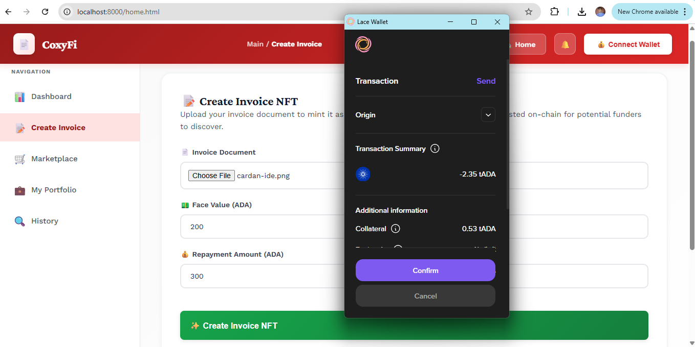
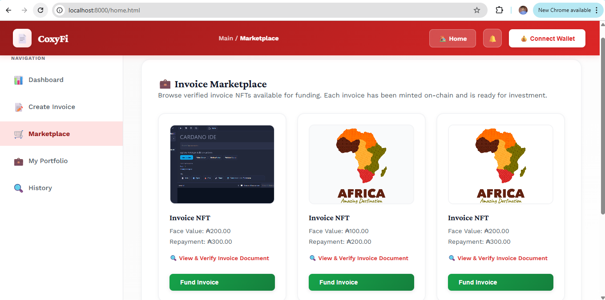

Coxyfi Manual
🧾 Create and Mint an Invoice
Issuers use the Create Invoice section to upload invoice files, define funding and repayment values, mint the invoice NFT, and publish the new opportunity to the marketplace.
How to Create an Invoice
- Choose the invoice document file from your device.
- Enter the Face Value in ADA. This is the amount investors will fund.
- Enter the Repayment Amount in ADA. This is the amount that will later be repaid.
- Click Create Invoice and approve the wallet transaction when prompted.
- Wait for the status panel to confirm the mint and listing.
Screenshot Placeholder

Suggested image: invoice upload form filled in
Important Notes
- Repayment should not be lower than face value, because that would remove investor profit.
- Keep a copy of the document you upload so you can cross-check it later.
- After successful creation, the invoice should appear in the Available Invoices section until funded.
Screenshot Placeholder

Suggested image: success toast + listed invoice card